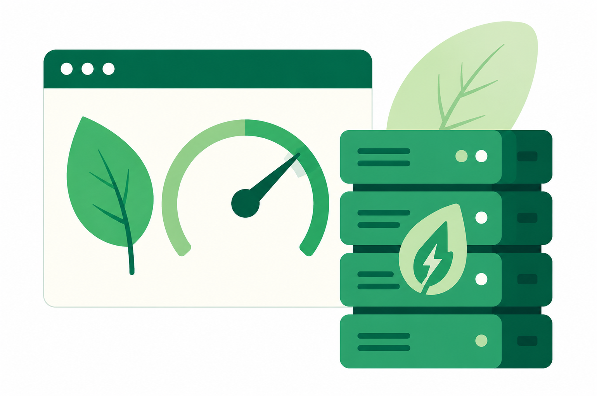

Des poids de page < 1 Mo
- Afin de limiter l’impact environnemental de notre plateforme, nous nous engageons à maintenir un poids de page inférieur à 1 Mo. Pour y parvenir, nous privilégions des formats optimisés tels que WebP, AVIF et SVG, permettant de réduire les transferts de données sans compromettre la qualité des contenus.
- Nous avons également fait le choix de ne pas diffuser de vidéos en 4K, une résolution encore peu utilisée et particulièrement gourmande en ressources.
- Notre interface adopte une approche frugale, sans animations ou effets visuels superflus, afin de proposer une expérience à la fois durable, performante et responsable.